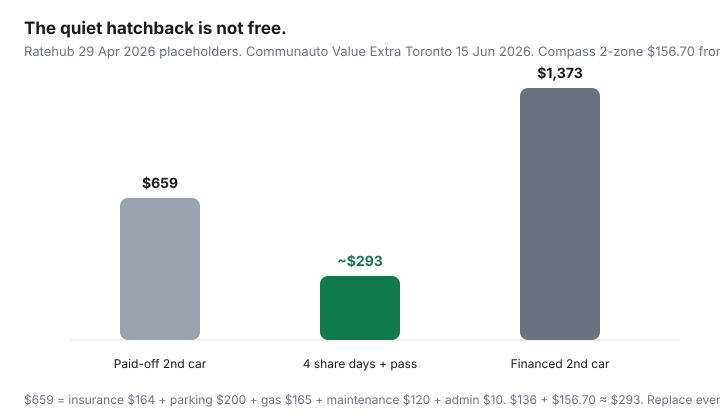

Transportation · Canada
How Canadian two-car households can test dropping the second car
Canadian two-car households keep a hatchback “just in case” that quietly burns insurance, a stall, maintenance, and a tank they forget to count. Ratehub’s blended ownership average is $1,373/month (29 Apr 2026) for one financed car — your second car is not another $1,373, but it is also not $0. This is how to see which costs vanish, audit the calendar, build a car-share and rental backup, and run a 90-day sell-or-keep experiment without turning February into a crisis.
Price the substitute with Communauto vs Zipcar, Evo and Modo, and city car-lite stacks. Keep the TCO dashboard in real cost of a car. Stalls: parking vs car-share.
Disclosure: Car-share memberships and short-term rental offers are offer types. Saving Optimizer may earn a commission if we later add partner links. We do not currently claim Communauto, Evo, Modo, Zipcar, or rental-brand partnerships. Confirm live rates and insurance storage rules before you cancel a policy. Not legal or tax advice.
Key takeaways
- Costs that disappear on a paid-off second car: insurance, parking, maintenance, gas, admin — Ratehub placeholders $164 + $200 + $120 + $165 + $10 = $659/month before you replace any line. A loan adds the $714 principal/interest pair.
- Replace parking with your stall rent or street-ticket reality. Downtown is not $200.
- Calendar-audit two months before you list the car. Conflicts you can name are cheaper than a surprise February.
- Backup: four car-share days + one rental weekend is a budget, not a vibe. Toronto Communauto Value Extra sketch: $30 + 4 × $26.50 = $136 plus km (15 Jun 2026 schedule).
- Park the savings (insurance you cancelled, stall you rented) in a named envelope so lifestyle creep does not eat the win.
Which car’s costs disappear (insurance, parking, maintenance)
Sell the quiet car — the IKEA-and-eight-nights hatchback — not the 6:15 a.m. tools van. On a paid-off beater, the Ratehub lines that usually vanish are insurance, parking, maintenance, fuel, and admin. Depreciation still happened; you just stop adding to it. Registration renewals stop. Winter tires on that VIN become a marketplace listing. On a financed second car, ending the loan is a separate decision from ending the car — sometimes you sell to kill the payment; sometimes the loan is cheaper than replacing those kilometres with Uber.
| Line | Ratehub monthly | If you drop a paid-off second car |
|---|---|---|
| Principal + interest | $522 + $192 | Already $0 — ignore |
| Insurance | $164 | Goes away (or storage premium — ask a broker) |
| Parking | $200 | Goes away or becomes stall rental income |
| Gas | $165 | Goes away; car-share fuel is inside their rate |
| Maintenance | $120 | Goes away; one remaining car still needs it |
Calendar audit: who needs a vehicle when
For 60 days, mark every trip the second car actually did: school, shift overlap, rink, cottage, airport, Home Depot. Colour-code: could be transit, could be the remaining car with a 20-minute shuffle, must be a second steering wheel. If “must” is four evenings a month, that is a car-share budget. If “must” is every weekday at 7:10 a.m. in opposite directions with no rapid transit, you are looking at keeping the car or moving house — not an app.
Backup plan: car-share, rental, employer shuttle
- Toronto / Montréal / Ottawa: Communauto Value Extra or Open; Zipcar for a predictable day cap (~$78 Toronto compact sketch).
- Vancouver / Victoria: Evo one-way + Modo reserved. See the Evo/Modo guide.
- Weekend cottage or IKEA-plus-IKEA: a traditional rental can beat 48 hours of car-share kilometres. Price it the Thursday before, not in the lot.
- Employer shuttle or carpool: if one commute is the only “must,” ask before you assume a second VIN.
Join and get approved before you sell. Approval is not instant. Put the membership fees in the worksheet so the “savings” stay honest.
Kid activities and winter contingency
Two rink bags in January are why Canadian second cars survive. Options that are not another insurance policy: a reserved Modo/Communauto with winter tires (ask the operator), a carpool spreadsheet, or keeping the car from November through March only — storage insurance in the shoulder months if your insurer offers it (broker question). Ice storms that shut transit are a taxi or hotel-if-stranded budget, not a reason to keep a $200 stall empty 11 months. If you live where the bus does not run after 8 p.m. and the share pod is a 25-minute walk, the experiment will fail — believe the walk in February, not July.

90-day sell-or-keep experiment
- Pick the candidate car. Photograph it. Get a realistic private or dealer bid so you know the walk-away cash.
- Park it. Hide the keys. If you can legally store-insure it cheaper, ask. If not, you are paying 90 more days of insurance as tuition — still cheaper than a panic repurchase.
- Live the backup plan. Log every Uber, share day, and fight about who gets the remaining car.
- At day 90, sum share + rental + transit upgrades. Compare to insurance + parking + gas + maintenance you would have paid. If share days exceeded ~10–12, keep or downgrade the car. If they were four, list it.
- If you sell, transfer plates and cancel insurance the same week so the savings start.
Tax/benefit notes if employer parking was tied to two drivers
Some employers subsidise a stall or run a taxable car allowance. If one driver stops commuting by car, payroll treatment can change. This is not tax advice. Ask HR what happens to the stall and whether a transit pass is a better benefit. Do not claim running-cost deductions on a car you sold. If you rent out a titled stall, talk to a professional about income reporting.
Reinvesting savings without lifestyle creep
The failure mode is cancelling $280 of insurance and parking and then adding a food-delivery habit that costs $280. Name the envelope: “second-car ghost.” First dollar goes to the remaining car’s emergency repairs (you now have no backup VIN). Second to a car-share float. Third to debt or a TFSA — your household order, not ours. Review at month three. If the envelope is empty and Uber is fat, you did not drop a car; you changed vendors.
Sources & date stamps
- Ratehub, cost of owning a car in Canada — $1,373 blended monthly stack, 29 Apr 2026.
- Communauto Toronto fee schedule effective 15 Jun 2026 — Value Extra $30 + $26.50 day max (companion car-share guide).
- TransLink Compass 2-zone monthly $156.70 from 1 Jul 2026; Evo/Modo public rates 20 Sep 2026 (companion Vancouver guide).
Frequently asked questions
How much can a second car cost a Canadian household?
Take Ratehub’s 2026 lines that actually disappear: insurance, parking, gas, maintenance, and admin — often several hundred dollars a month even on a paid-off beater. A financed second car also drops principal and interest. Downtown stalls can exceed Ratehub’s $200 parking placeholder. Build your sheet; do not use $1,373 twice.
How do we test dropping it without getting stuck?
Park it for 90 days (or insure it as stored if your province and insurer allow — ask a licensed broker). Live on the remaining car plus transit, car-share, and a pre-priced rental. Log every conflict. Then sell, keep, or downgrade.
What is a reasonable backup plan?
Communauto, Evo/Modo, Zipcar, a weekend rental, an employer shuttle, and a credit-card or CAA roadside plan on the car you keep. Price four share days, not a fantasy of zero exceptions.
What about kids’ activities and winter?
Those are the usual reasons households keep the hatchback. If both adults commute opposite suburbs in January, the second car may be the cheaper misery. If the conflicts are two evenings a week, a reserved car-share or a carpool often wins.
Do we lose anything on taxes or benefits?
Employer parking or a taxable car allowance can be tied to driving. This is not tax advice — ask payroll or a professional if a stall or allowance disappears. Do not invent a deduction for a car you no longer own.